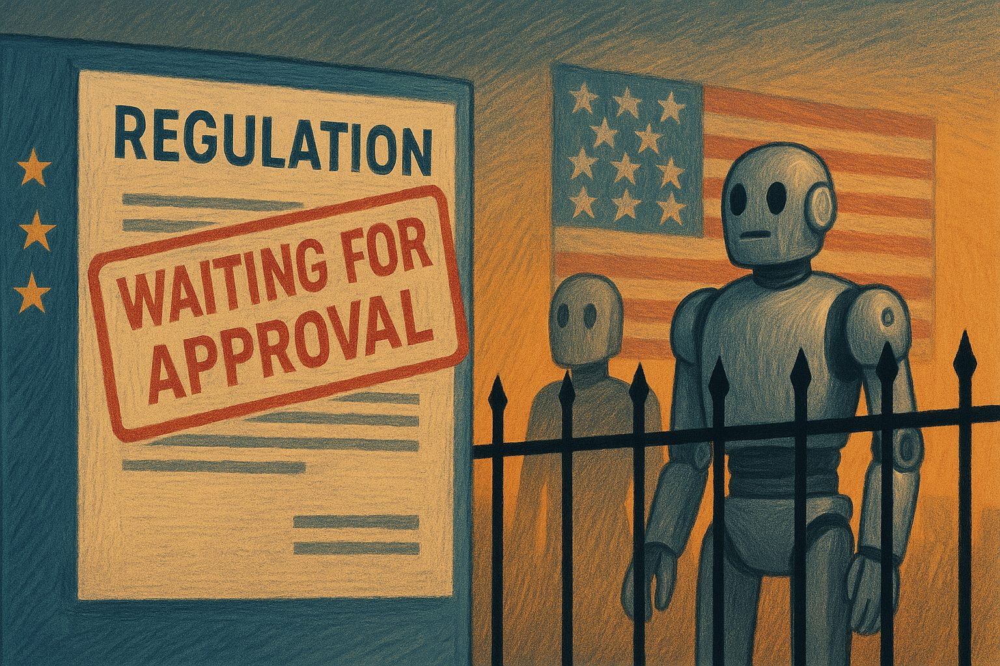
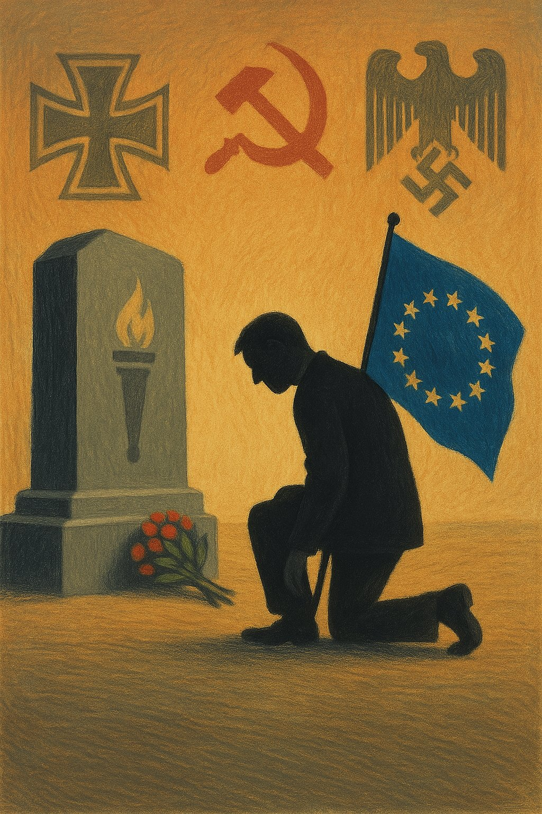
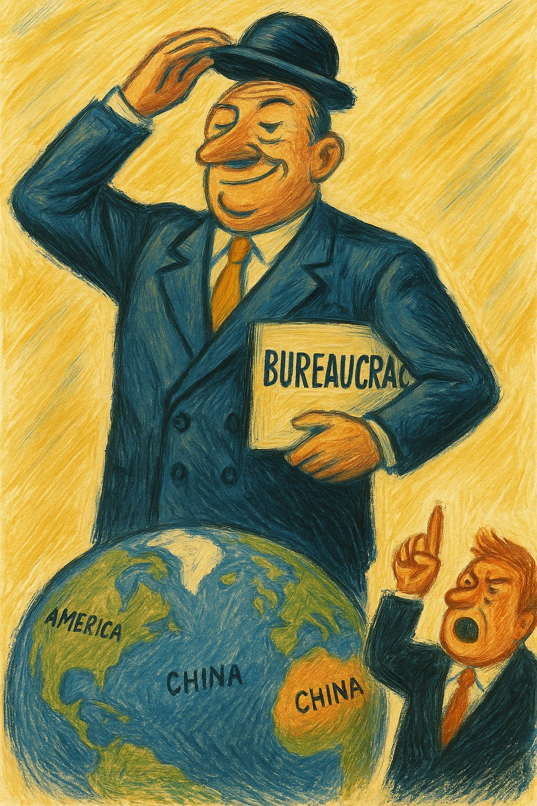

Eiropas reputācijas lamatas: Kā normatīvā kultūra kavē izaugsmi, tehnoloģijas un drošību
Ievads
Eiropa rūpīgi sargā sabiedrības tēlu, iekļaujošas vērtības, normatīvo kārtību un atbildību par savu vēsturisko mantojumu. Mēs sevi redzam kā civilizētu sabiedrību, kas noraida ekstrēmus soļus, bet vēl joprojām tic vērtībām. Tomēr 21. gadsimta realitāte rāda, ka tieši šīs "maigās varas" iezīmes var kļūt par Eiropas vājuma sakni.
Šī ir analīze par to, kā reputācijas un "nepārmešanas" kultūra kavē drošību, inovāciju un skaidru rīcību gan tehnoloģiju attīstībā, gan drošībā, gan idejiskajā telpā.
1. Reputācija sabiedrībā
Eiropā valda dziļa iekšēja "nekā nedarīšanas" kultūra: labāk neriskēt, lai nenonāktu uzmanības centrā ar nepareiziem izteicieniem vai rīcību. Politiskā korektuma, iekļaušanas un "uzmanības pret visiem" piegājiena rezultātā publiskā telpa kļuva piesardzīga, bailīga, samākslota. Cilvēki bieži nerīkojās nevis tāpēc, ka trūkst ideju, bet tāpēc, ka bail no reputācijas riskiem.
2. Tehnoloģijas: Eiropas klusā kapitulācija
AI un inovācija
Kamēr ASV un Ķīna investē desmitiem miljardu eiro gadā AI attīstībā, Eiropa galvenokārt raksta regulas. Piemēram:
- 2023. gadā ASV AI investīcijas pārsniedza 50 miljardus dolāru.
- Ķīnā valsts un privātais sektors iegulda ap 30–40 miljardiem dolāru gadā.
- ES (2022. g.) AI attīstības finansējums bija tikai 3–5 miljardi eiro, galvenokārt caur Horizon programmu.

Tā nav tikai finansiālā atšķirība. Tā ir attieksmes un drosmes starpība. Kamēr Silīcija ieleja testē jaunas lietas ar principu "dari vispirms, regulē vēlāk", Eiropa baidās no skandāla, tiesvedības vai "sabiedrības nosodījuma".
Sekas:
- Eiropā nav izveidojies neviens vadošais AI rīks (pretstatā ChatGPT, Claude, Gemini, Midjourney).
- Lielākie smadzeņu centri (piemēram, ETH Zürich, TU Delft) zaudē jaunos prātus, kas dodas uz ASV.
- Startapi no Berlīnes vai Amsterdamas pārceļas uz Kaliforniju, kur nav jāgaida 18 mēnešus uz datu piekrišanas saskaņojumu.
3. Krievija un rīcībnespēja
Gadiem ilgi Eiropa baidījās nosaukt Krieviju par draudu. No Merkeles Nord Stream 2 "pragmatisma" līdz Makrona "jāuzklausa Krievijas bailes" — reputācija bija svarīgāka par realitāti.
Rezultātā:
- Ukraina palika viena līdz pilna mēroga iebrukumam.
- Līdz 2022. gadam ES katru gadu samaksāja Krievijai ap 100 miljardiem eiro par fosilo kurināmo.
- Maskava to ieguldīja tankos un raķetēs.
Tā ir reputācijas ilūzija — "mēs neizskatīsimies kā agresori", tāpēc nerīkosimies. Bet tas noveda pie smagākā kara Eiropā kopš Otrā pasaules kara.
4. Brīvības trauslums
Kamēr Eiropa sevi uzskata par brīvības bastionu, tā neievēro, cik trausla ir pati brīvība, ja tai nav drosmīgu aizstāvju. Cenzūra nav vajadzīga — pietiek ar reputācijas bailēm. Cilvēki paši klusē, paši pielāgojas, paši atliek.
Un šāda sabiedrība nevar uzvarēt cīņā ar totalitāru sistēmu, kas nebaidās no "nekorektuma", bet tikai no vājuma.
5. Ekonomiskā cena
AI un inovācija:
- Ja Eiropa būtu investējusi AI attīstībā tikpat cik ASV (50 miljardi gadā), pēdējo 5 gadu laikā būtu ieguldīti 250 miljardi eiro.
- Realitātē ieguldījumi bijuši tikai ap 15-20 miljardiem eiro.
- Zaudējums: 230+ miljardi eiro, nemaz nerunājot par zinātnieku aizplūšanu un tehnoloģiju importu no ASV/Ķīnas.
Enerģētiskā atkarība:
- Līdz 2022. gadam ES maksāja ~1 miljardu eiro nedēļā Krievijas enerģijai.
- Kopā ap 100 miljardi eiro gadā, 10 gadu laikā — 1 triljons eiro.
- Un tikai tāpēc, ka reputācijas dēļ nevēlējāmies konfrontēties.
Nobeigums: kas jāmaina?
Eiropai nav jāatsakās no vērtībām, bet jāatsakās no bailēm. Reputācijas bailes nedrīkst būt svarīgākas par rīcību, viedokļu daudzveidība nevar būt padarīta par draudu, un drosme pieņemt lēmumus nedrīkst tikt kavēta tikai tāpēc, ka kāds twiterī var nesaprast.
Mūsu reputācija nav svarīgāka par mūsu brīvību.
Un ja mēs to aizmirstam, tad vēl bīstamāk — mēs to pazaudēsim.
Kāpēc Eiropā izveidojusies reputācijas un piesardzības kultūra?
- 1. Vēsturiskā vainas apziņa un pārkompensācija

Pēc 20. gs. traģēdijām – diviem pasaules kariem, holokausta, koloniālisma, totalitārisma – Eiropa attīstīja vērtību bāzētu pašidentitāti: mieru, cilvēktiesības, tolerance, starptautisku sadarbību.
Vācijas vainas kultūra veidoja modeli: "nekad vairs" → pārmērīga piesardzība, arī retorikā, aizsardzībā, attiecībās ar Krieviju.
Postkoloniālā Rietumeiropa kļuva ļoti jūtīga pret apspiešanas, diskriminācijas, hegemonijas jēdzieniem.
Eiropas Savienības projekts pēc būtības ir birokrātisks izlīgums, nevis vīzija par spēku vai drosmi.
- 2. Sistēmiska pārvaldības kultūra
Eiropa (īpaši Rietumeiropa) attīstīja ļoti formālu, regulējumu piesātinātu sabiedrību, kur normas > rīcība, institūcijas > iniciatīva, konsenss > pretruna. Tas palīdzēja garantēt stabilitāti, bet iznīcināja elastību.
- 3. Vājas robežas starp publisko un privāto sfēru
Reputācija Eiropā bieži ir saistīta ar uzvedību publiskajā telpā, nevis ar rezultātu vai kompetenci. Tā rodas situācijas, kur cilvēku vērtē pēc "pareizās" valodas, nevis domas; amatpersonas baidās rīkoties, lai "neizskatītos slikti"; tiek uzskatīts: būt neitrālam un korektam = būt labam.
🧨 Kas no tā iegūst?
- 1. Birokrātiskās un juridiskās struktūras
Tās nostiprina savu varu, jo viss kļūst atkarīgs no regulām, interpretācijām, saskaņojumiem. Briseles aparāts kļūst pašpietiekams, nevis sabiedrības kalps.
- 2. Valstis un uzņēmumi ārpus Eiropas
ASV un Ķīna iegūst, jo viņi var: ātrāk rīkoties (AI, enerģija, militārā joma), pārpirkt Eiropas inovācijas, izmantot ES vājumu savos ģeopolitiskajos aprēķinos.
- 3. Demagoģija un populisms Eiropas iekšienē
Kad sabiedrība jūt, ka "īstās problēmas netiek risinātas", parādās populisti, kas sola "beigt čīkstēt un darīt", piemēram, Meloni, Orbāns, Le Pens, Šlesers.

📉 Kas zaudē visvairāk?
- Jaunie radošie cilvēki un inovatori — viņi aizbrauc uz ASV, Kanādu, Izraēlu, Ķīnu, jo tur ir telpa riskam, mēģinājumiem, izgāšanās pieņemšanai.
- Demokrātiskās vērtības pašas par sevi — kad vārda brīvība kļūst par tukšu formalitāti, brīvība kļūst nedzīva.
- Mazās valstis — tās, kas paļaujas uz "Eiropas vienoto atbildi" (piemēram, Baltijas valstis), bieži cieš no lēnas, izvairīgas, piesardzīgas rīcības.
🛠️ Ko darīt tieši tagad?
- Pārskatīt, kam mēs patiesi kalpojam: reputācijai vai realitātei? Brīžiem jāsaka skaidri: labāk kļūdīties, nekā vispār nerīkoties.
- Mazāk normatīvisma, vairāk atbildīgas rīcības — atļaut eksperimentēt, pat ja tas nozīmē radīt kļūdas.
- Atzīt, ka konfrontācija ne vienmēr ir slikta — ar autoritāriem spēkiem nevar runāt reputācijas valodā.
- Aizstāvēt brīvību ne tikai vārdos, bet arī telpā — stiprināt vārda brīvību bez "atcelšanas" draudiem.
🧾 Noslēgums:
Eiropa ir morāli izsmalcināta, bet praktiski paralizēta. Ja reputācija paliek svarīgāka par realitāti, mēs būsim nevis civilizācijas sirdsapziņa, bet tās iestrēgušais spogulis. Un tajā laikā citi vienkārši rīkosies.
"Mēs vēl rakstīsim vadlīnijas, kamēr citi jau būvēs pasauli, kurā mums būs jākalpo."
🧭 Vai Eiropā viss ir slikti?
Nē, pavisam noteikti nē. Daudzas Eiropas reputācijas kultūras iezīmes ir gudras, vēsturiski pamatotas un sociāli vērtīgas.
🌿 Kas Eiropā ir labi:
- Sociālā stabilitāte — aizsardzība, veselības aprūpe, izglītība rada drošības sajūtu.
- Vērtību pamatotība — tiesību sistēma, kas aizsargā privātumu, minoritātes, vārda brīvību.
- Vide un pilsētvides kvalitāte — pilsētas ir dzīvojamas, cilvēkam draudzīgas.
- Klimata kurss — Eiropa cenšas konsekventi veidot Zaļo kursu.
✅ Ko mēs varētu mācīties viens no otra?
Ideālais modelis nav ne Brisele, ne Texas, bet veselīgs balanss starp drosmi un atbildību. Starp vārda brīvību un empātiju. Starp reputāciju un rīcību.
✏️ Noslēguma doma:
Eiropas reputācija nav slikta — bet tai nevajadzētu būt cietumam.
🧠 Latvijas korektuma kultūras saknes:
- Padomju mantojums: klusēšana = izdzīvošana — desmitgadēm cilvēkiem iemācīja nedomāt skaļi, nerunāt, neriskēt.
- Mazs tirgus + šaura profesionālā vide — "visi visus pazīst", un viena bilde vai ieraksts var izplatīties zibensātrumā.
- Oficiālās runas un publiskā tēla bailes — amatpersonas ļoti piesargās, pat ja viņiem ir interesanti un drosmīgi viedokļi.
🕊️ Vai tam ir izeja?
Jā – un tā sākas ar cilvēkiem, kas tomēr runā, pat ja "varētu būt neērti": tiem, kas uzraksta ironiskas rindas par dzīvi; tiem, kas uzdod jautājumus, nevis mācās deklamēt pareizās frāzes.
✏️ Noslēgums:
Latvijā korektums dažreiz nozīmē klusumu tur, kur vajadzētu dzirdēt balsi. Mēs esam pietiekami izglītoti, lai domātu kritiski — bet vai pietiekami drosmīgi, lai to pateiktu skaļi?
Europe's Reputation Trap: How Normative Culture Hinders Growth, Technology and Security
Introduction
Europe carefully guards its public image, inclusive values, normative order and responsibility for its historical legacy. We see ourselves as a civilised society that rejects extreme steps, yet still believes in values. However, 21st-century reality shows that these very "soft power" traits can become the root of Europe's weakness.
This is an analysis of how a culture of reputation and "not rocking the boat" hinders security, innovation and clear action — in technology development, in defence, and in the realm of ideas.
1. Reputation in society
Europe is dominated by a deep internal culture of "doing nothing": better not to risk anything, lest you end up in the spotlight with the wrong words or actions. Political correctness, inclusion and a "be careful with everyone" approach have made the public sphere cautious, fearful and contrived. People often failed to act not because they lacked ideas, but because they feared reputational risk.
2. Technology: Europe's quiet capitulation
AI and innovation
While the USA and China invest tens of billions of euros per year in AI development, Europe is mainly writing regulations. For example:
- In 2023, US AI investment exceeded 50 billion dollars.
- In China, the public and private sectors invest around 30–40 billion dollars per year.
- The EU's (2022) AI development funding was only 3–5 billion euros, mainly through the Horizon programme.
This is not merely a financial difference. It is a difference in attitude and courage. While Silicon Valley tests new things on the principle of "build first, regulate later", Europe fears scandal, litigation or "public condemnation".
Consequences:
- No leading AI tool has emerged from Europe (in contrast to ChatGPT, Claude, Gemini, Midjourney).
- Major brain centres (e.g. ETH Zürich, TU Delft) are losing young minds who head to the USA.
- Start-ups from Berlin or Amsterdam relocate to California, where they don't have to wait 18 months for data-consent clearance.
3. Russia and paralysis
For years, Europe was afraid to call Russia a threat. From Merkel's Nord Stream 2 "pragmatism" to Macron's "we must listen to Russia's fears" — reputation mattered more than reality.
The result:
- Ukraine was left alone until the full-scale invasion.
- Until 2022, the EU paid Russia around 100 billion euros per year for fossil fuels.
- Moscow invested it in tanks and missiles.
That is the illusion of reputation — "we won't look like aggressors", so we won't act. But it led to the worst war in Europe since the Second World War.
4. The fragility of freedom
While Europe sees itself as a bastion of freedom, it fails to notice how fragile freedom is without courageous defenders. Censorship is unnecessary — the fear of reputational damage suffices. People silence themselves, adapt themselves, defer themselves.
And such a society cannot prevail in conflict with a totalitarian system that does not fear "incorrectness" — only weakness.
5. The economic cost
AI and innovation:
- Had Europe invested in AI development on the same scale as the USA (50 billion per year), the past 5 years would have seen 250 billion euros invested.
- In reality, investment has been only around 15–20 billion euros.
- Loss: 230+ billion euros, not counting the brain drain and technology imports from the USA/China.
Energy dependence:
- Until 2022, the EU paid ~1 billion euros per week for Russian energy.
- Around 100 billion euros per year; over 10 years — 1 trillion euros.
- All because we didn't want to confront, for the sake of reputation.
Conclusion: what needs to change?
Europe doesn't need to abandon its values, but it must abandon its fears. Reputational fears must not outweigh action; diversity of opinion cannot be treated as a threat; and the courage to make decisions must not be hampered just because someone on Twitter might not understand.
Our reputation is not more important than our freedom.
And if we forget that, then even more dangerously — we will lose it.
Why has Europe developed a culture of reputation and caution?
- 1. Historical guilt and over-compensation
After the tragedies of the 20th century — two world wars, the Holocaust, colonialism, totalitarianism — Europe developed a values-based self-identity: peace, human rights, tolerance, international cooperation.
Germany's guilt culture created a template: "never again" → excessive caution, including in rhetoric, defence and relations with Russia.
Post-colonial Western Europe became highly sensitive to concepts of oppression, discrimination and hegemony.
The European Union project is at its core a bureaucratic compromise, not a vision of strength or courage.
- 2. Systemic governance culture
Europe (especially Western Europe) developed a highly formal, regulation-saturated society where norms > action, institutions > initiative, consensus > dissent. This helped guarantee stability, but destroyed flexibility.
- 3. Weak boundaries between public and private spheres
Reputation in Europe is often tied to behaviour in the public sphere rather than results or competence. This creates situations where people are judged by "correct" language rather than thought; officials fear acting lest they "look bad"; and being neutral and correct is equated with being good.
🧨 Who benefits from this?
- 1. Bureaucratic and legal structures
They consolidate their power, as everything becomes dependent on regulations, interpretations and approvals. The Brussels apparatus becomes self-sufficient, rather than a servant of society.
- 2. Countries and companies outside Europe
The USA and China gain, because they can: act faster (AI, energy, military), acquire European innovations, exploit EU weakness in their geopolitical calculations.
- 3. Demagoguery and populism within Europe
When society feels that "real problems are not being addressed", populists appear promising to "stop whining and act" — e.g. Meloni, Orbán, Le Pen, Šlesers.
📉 Who loses most?
- Young creative people and innovators — they leave for the USA, Canada, Israel, China, where there is space for risk, attempts and acceptance of failure.
- Democratic values themselves — when freedom of expression becomes an empty formality because people are afraid to speak, freedom becomes lifeless.
- Small countries — those that rely on a "unified European response" (e.g. the Baltic states) often suffer from slow, evasive, cautious action.
🛠️ What to do right now?
- Reconsider whom we truly serve: reputation or reality? Sometimes one must say clearly: better to err than not to act at all.
- Less normativism, more accountable action — allow experimentation, even if it means making mistakes.
- Acknowledge that confrontation is not always bad — with authoritarian forces you cannot speak the language of reputation.
- Defend freedom not only in words but also in space — strengthen freedom of expression without the threat of "cancellation".
🧾 Conclusion:
Europe is morally sophisticated but practically paralysed. If reputation remains more important than reality, we will be not the conscience of civilisation but its frozen mirror. And in the meantime, others will simply act.
"We will still be writing guidelines while others are already building the world in which we will have to serve."
🧭 Is everything bad in Europe?
No, certainly not. Many features of Europe's reputation culture are wise, historically grounded and socially valuable.
🌿 What Europe does well:
- Social stability — protection, healthcare, education create a sense of security.
- Value foundations — a legal system that protects privacy, minorities and freedom of expression.
- Urban quality and the environment — cities are liveable and human-friendly.
- The Green Deal — Europe is the only region consistently pursuing a climate policy that could become an export model.
✅ What we could learn from each other?
The ideal model is neither Brussels nor Texas, but a healthy balance between courage and responsibility. Between freedom of expression and empathy. Between reputation and action.
✏️ Closing thought:
Europe's reputation is not bad — but it should not be a prison.
🧠 The roots of Latvia's culture of correctness:
- Soviet legacy: silence = survival — for decades people were taught not to think aloud, not to speak, not to risk.
- Small market + narrow professional environment — "everyone knows everyone", and one photo or post can spread at lightning speed.
- Fear of official speech and public image — officials are very guarded, even when they have interesting and courageous opinions.
🕊️ Is there a way out?
Yes — and it starts with people who nonetheless speak, even if "it could be uncomfortable": those who write ironic lines about life; those who ask questions rather than learning to recite the correct phrases.
✏️ Conclusion:
In Latvia, correctness sometimes means silence where a voice should be heard. We are educated enough to think critically — but are we brave enough to say it aloud?